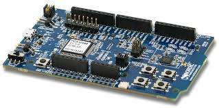
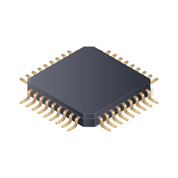

Embedded Debugging
There is Tools for that Already!
- Segger J-Link
- ST-Link
- CMSIS-DAP
- Many variants
- Blackmagic Probe
- ...
- Segger J-Link Tools
- ST-Link Utility
- stlink-tool
- pyOCD
- OpenOCD
- Many variants
- Custom Scripts & Programs
- ...
Host
USB ↕ ETH
Vendor Defined
Debug
Probe

SWD/JTAG Peripheral
between
Host and Target
SWD ↕ JTAG
Architecture Defined
Target

The traditional way
UI
GDB-MI
GDB
GDB-STUB
TARGET
The probe-rs way
UI
SERVER
TARGET

cargo-flash
cargo-embed
vscode-plugin
Application
probe-rs-rtt
GDB-Stub
Flashing
Libraries
Session
Core
Target Description
probe-rs
Probe
Flashing
Flashing
hs_probe